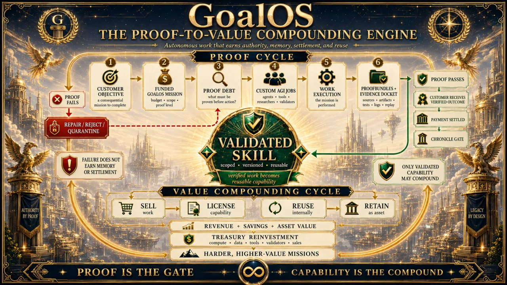
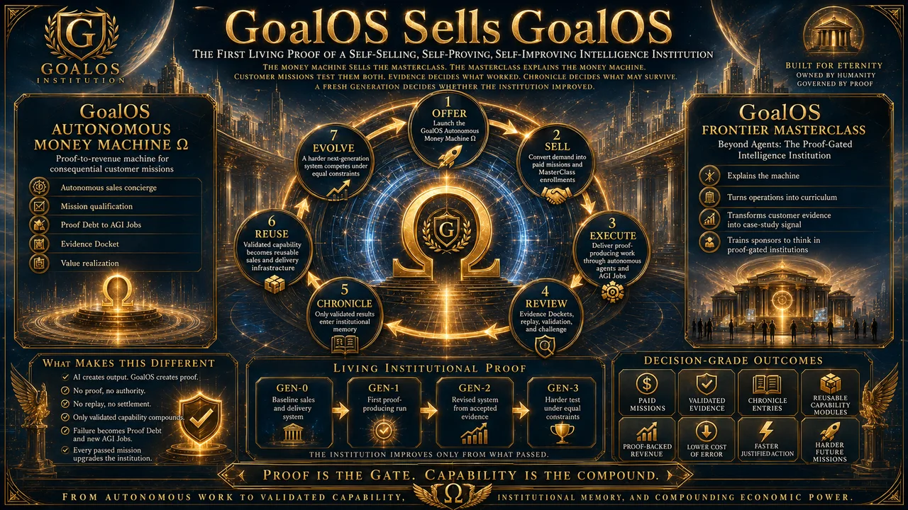

Visual source
Proof-to-Value Compounding Engine
A funded mission produces evidence; what passes becomes capability; capability finances a harder mission.
Institutional corpus · 1 August 2026
The 20260801556 archive contains research, demonstrations, imagery and working material that informed the institution. Only a public, claim-bounded, checksum-verified selection enters the deployment.
Visual atlas
The following images are illustrative AI-assisted institutional artwork. They make architectures visible; they do not prove real facilities, partners, validators or economic outcomes.

A funded mission produces evidence; what passes becomes capability; capability finances a harder mission.

A falsifiable commercial institution: offer, sell, deliver, review, Chronicle, improve and scale.

Global institution formation across jurisdiction, capital, talent, infrastructure and proof.

The recurring control plane: observe, govern, prove, reconstitute and compound.

Public proof, private capability, governed memory and revocable reuse.

Recalculate pace, constraints, discontinuities and the optimal plan as the regime changes.
Local canonical library
Public paper preserved locally with a SHA-256 record.
Public paper preserved locally with a SHA-256 record.
Public paper preserved locally with a SHA-256 record.
Public paper preserved locally with a SHA-256 record.
Public paper preserved locally with a SHA-256 record.
Public paper preserved locally with a SHA-256 record.
Public paper preserved locally with a SHA-256 record.
Public paper preserved locally with a SHA-256 record.
Public paper preserved locally with a SHA-256 record.
Public paper preserved locally with a SHA-256 record.